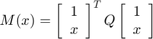
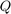
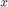

B2BDC example: GRI-Mech 3.0
In this example, we illustrate one manner in which a Dataset object can be created and populated using Excel spreadsheets and MATLAB .mat files which contain, respectively, experimental observations and corresponding models with variable uncertainty.
Contents
- Specifying (input) experimental QOI data (user-supplied)
- Specifying (input) Models and variables
- Surrogate Models
- Model variables
- Example: Load and examine model/variable data
- Example: Initialize a dataset for B2B-DC analysis
- Example: Add dataset units into the dataset
- Example: Verify number of DatasetUnits
- Example: Verify number of variables
- Conclusion
- Attribution
format compact W = what('GriAnalysisExample'); str = genpath(W.path); addpath(str);
Specifying (input) experimental QOI data (user-supplied)
The experimental QOI (eQOI) data can be loaded from a user-supplied Excel file of the form exemplified below,

where the columns, in order, are
- A: name - unique name identifying the experimental QOI (e.g., 'bch2o.t1')
- B: LB - LOWER bound on value of the eQOI; asserted by experimentalist
- C: UB - UPPER bound on value of the eQOI; asserted by experimentalist
- D: value - observed value of the experimental QOI (this column is optional)
The number of rows is denoted numQOI, which denotes the number of experimental QOIs in the dataset. There may be 3 or 4 columns (numCol).
[~,~,experimentData] = xlsread('GRIMech_expdata.xls');
The MATLAB function xlsread creates a MATLAB cell array (named experimentData here) of dimension numQOI -by- numCol containing the data in the Excel file. In this particular example, numQOI equals 77, and numCol equals 4.
size(experimentData)
ans =
77 4
Look at the name, experimental bounds (lower and upper), and observed value for the 14th eQOI
experimentData{14,1}
[experimentData{14,2} experimentData{14,3}]
experimentData{14,4}
ans =
ch3.c2
ans =
2.4883 2.5754
ans =
2.5340
Specifying (input) Models and variables
Models that predict the values of the eQOIs as functions of the uncertain variables can be input as a MATLAB cell array (denoted modelData below). The dimension is numQOI-by-3. Each row corresponds to a different model. The columns represent
- key, a unique key identifying the eQoI (should match one of the name entries within experimentData) associated with this model;
- mCell, a cell array, giving some mathematical description of the model. There are three acceptable formats for this, specified by coefficients or by data to fit, described in detail below;
- vCell, a cell array, delineating variables on which this model depends.
Surrogate Models
There are several acceptable formats for mCell, corresponding to different forms of the individual models:
- models with quadratic dependence on variables;
- models with rational-quadratic dependence on variables;
- models described by a collection of samples (variable value, model output value).
(1) For models with quadratic dependence, mCell is a 1-by-2 cell, of the form {'quadratic' , coeffMatrix}.
- The first entry (the string 'quadratic') specifies the model type.
- The second entry is a symmetric matrix (MATLAB class double), defining a function

where  is the symmetric coefficient matrix, coefMatrix, and  is the vector of variables on which the model depends.
(2) For models with rational-quadratic dependence, mCell is a 1-by-3 cell, of the form {'rational quadratic' , coeffMatrixNum , coeffMatrixDen}.
- the first entry (the string 'rational quadratic') specifies the model type;
- the second entry is a symmetric coefficient matrix defining the quadratic numerator function;
- the 3rd entry is a symmetric coefficient matrix defining the quadratic denominator function.
(3) Finally, for models that are described by samples, mCell is a 1-by-3 cell, of the form {fitClass , Xdata, Ydata}.
- The first entry dictates what function class ('quadratic' or 'rational quadratic') is used to fit the data.
- The 2nd entry, Xdata is double matrix, of dimension nSample -by- nVar, describing variable values at the sample points.
- The 3rd element, Ydata is a nSample -by- 1 double array corresponding model values at the sample point.
Model variables
The variables on which the model depends are delineated in vCell, the 3rd column of modelData. This is a nVar-by-4 cell array, where nVar represents the number of variables that the model depends on. Each row is of the form {varName , LB , UB , xNom}, where
- varName is a string identifying the variable (e.g., 'k1' or 'A(O+H2=H+OH)')
- LB is the lower bound on the variable (prior information)
- UB is the upper bound on the variable (prior information)
- xNom is the nominal value of the variable (typically xNom = (LB + UB)/2)
Example: Load and examine model/variable data
In this example file, all models are specified in the quadratic form.
s = load('GRIMech_modeldata.mat');
modelData = s.GRIMech_modeldata;
There are 77 models in this set
size(modelData,1)
ans =
77
As an example, the model #61 is named 'oh.3b' which corresponds to an OH concentration measurement (for more information, see the GRIMech website). It depends on 12 model variables, and there is a 13-by-13 coefficient matrix describing the quadratic (plus linear plus constant) surrogate model.
modelData{61,1}
ans = oh.3b
modelData{61,3}
ans =
'A(O+CH4<=>OH+CH3)' [-1] [1] [ 0]
'A(H+O2+M<=>HO2+M)' [-1] [1] [-0.6897]
'A(H+O2<=>O+OH)' [-1] [1] [ -1]
'A(H+CH3(+M)<=>CH...' [-1] [1] [ 0]
'A(H+CH2O(+M)<=>C...' [-1] [1] [ 0]
'A(OH+HO2<=>O2+H2...' [-1] [1] [ 1]
'A(OH+CH3<=>CH2(S...' [-1] [1] [ 0]
'A(HO2+CH3<=>O2+CH4)' [-1] [1] [ 0]
'A(CH2(S)+O2<=>CO...' [-1] [1] [ 0]
'A(CH3+O2<=>O+CH3O)' [-1] [1] [ 0]
'A(HCO(+M)<=>H+CO...' [-1] [1] [ 0.2630]
'A(HCO+O2<=>HO2+CO)' [-1] [1] [ -1]
'A(CH3O+O2<=>HO2+...' [-1] [1] [-0.5015]
modelData{61,2}
ans =
'quadratic' [14x14 double]
By contrast, Model 62 depends on 11 model variables
modelData{62,3}
ans =
'A(O+CH3<=>H+CH2O)' [-1] [1] [ 0]
'A(O+CH4<=>OH+CH3)' [-1] [1] [ 0]
'A(H+O2<=>O+OH)' [-1] [1] [ -1]
'A(H+CH3(+M)<=>CH...' [-1] [1] [ 0]
'A(H+CH4<=>CH3+H2)' [-1] [1] [ 0]
'A(OH+CH3<=>CH2(S...' [-1] [1] [ 0]
'A(OH+CH4<=>CH3+H2O)' [-1] [1] [ 0]
'A(CH3+O2<=>O+CH3O)' [-1] [1] [ 0]
'A(CH3+O2<=>OH+CH2O)' [-1] [1] [ 0]
'A(2CH3(+M)<=>C2H...' [-1] [1] [ -1]
'A(2CH3<=>H+C2H5)' [-1] [1] [0.6781]
Model 61 and 62 share 5 common model variables
intersect(modelData{61,3}(:,1), modelData{62,3}(:,1))
ans =
'A(CH3+O2<=>O+CH3O)'
'A(H+CH3(+M)<=>CH4(+M))'
'A(H+O2<=>O+OH)'
'A(O+CH4<=>OH+CH3)'
'A(OH+CH3<=>CH2(S)+H2O)'
Example: Initialize a dataset for B2B-DC analysis
Initialize an empty DataSet object. The only input arguments is a descriptive name. Here we use 'GRI Mech 3.0', reflecting where the experimental data and models originated.
dsGRI = generateDataset('GRI Mech 3.0');
As expected, except for the user-supplied name, there is no information contained in the object
dsGRI
dsGRI =
Dataset with properties:
Name: 'GRI Mech 3.0'
DatasetUnits: []
Variables: [1x1 B2BDC.B2Bvariables.VariableList]
FeasiblePoint: []
ConsistencyMeasure: []
Example: Add dataset units into the dataset
dsGRI = addData(dsGRI,experimentData,modelData);
Example: Verify number of DatasetUnits
As expected, there are 77 dataset units in the object. These represent pairings of the experimental bounds with their corresponding surrogate models.
dsGRI.DatasetUnits
ans =
DatasetUnitList with properties:
Length: 77
Values: [1x77 B2BDC.B2Bdataset.DatasetUnit]
Example: Verify number of variables
Each of the 77 models depends a handful (from 5 to 13) of model variables. Some are common across models. The union of the lists of these variables form the variable-space for this dataset. In this case, there are 102 overall model variables.
dsGRI.Variables
ans =
VariableList with properties:
Length: 102
Values: [1x102 B2BDC.B2Bvariables.ModelVariable]
Conclusion
Constructing a Dataset object involves specifying many items
- experimental results: each corresponds to a (named) scalar-valued eQOI, with an interval of its true value asserted by the experimentalist;
- a model for each eQOI, with dependence on unknown/uncertain model variables
- a-priori upper and lower bounds on the model variables
Once these are specified, analysis tools, such as dataset consistency and prediction can be carried out. Those calculations are illustrated in the Performing B2B-DC analysis on a Dataset example in GRIMech_demo2.
Attribution
UC Berkeley, Spring 2016, B2BDC team